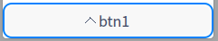

DButtonBoxButton Class
class Dtk::Widget::DButtonBoxButtonDButtonBoxButton 提供了修改了样式的按钮. More...
| Header: | #include <DButtonBoxButton> |
Public Functions
| DButtonBoxButton(int iconType = -1, const QString &text = QString(), QWidget *parent = nullptr) | |
| DButtonBoxButton(const QIcon &icon, const QString &text = QString(), QWidget *parent = nullptr) | |
| DButtonBoxButton(const QString &text, QWidget *parent = nullptr) | |
| QSize | iconSize() const |
| QSize | minimumSizeHint() const |
| void | setIcon(const QIcon &icon) |
| void | setIcon(int iconType) |
| QSize | sizeHint() const |
Detailed Description
DButtonBoxButton 提供了设置图标的按钮的函数
Note: 代码示例
Note: DButtonBoxButton *btn1 = new DButtonBoxButton("btn1");
Note: btn1->setIcon(QStyle::StandardPixmap::SP_ArrowUp);

See also Dtk::Widget::DButtonBox.
Member Function Documentation
DButtonBoxButton::DButtonBoxButton(int iconType = -1, const QString &text = QString(), QWidget *parent = nullptr)
DButtonBoxButton 构造函数.
iconType 标准图标 text 参数被发送到 DButtonBoxButton 构造函数 parent 参数被发送到 DButtonBoxButton 构造函数
DButtonBoxButton::DButtonBoxButton(const QIcon &icon, const QString &text = QString(), QWidget *parent = nullptr)
DButtonBoxButton构造函数.
icon 图标 text 参数被发送到 DButtonBoxButton 构造函数 parent 参数被发送到 DButtonBoxButton 构造函数
DButtonBoxButton::DButtonBoxButton(const QString &text, QWidget *parent = nullptr)
DButtonBoxButton 构造函数.
text 按钮名称 parent 参数被发送到 QAbstractButton 构造函数
QSize DButtonBoxButton::iconSize() const
返回图标大小.
Returns 返回图标大小.
QSize DButtonBoxButton::minimumSizeHint() const
DButtonBoxButton::minimumSizeHint.
Returns 按钮的最小大小策略.
See also QAbstractButton::minimumSizeHint().
void DButtonBoxButton::setIcon(const QIcon &icon)
设置按钮图标.
icon 图标
void DButtonBoxButton::setIcon(int iconType)
设置按钮图标.
This is an overloaded function.
iconType 标准图标
QSize DButtonBoxButton::sizeHint() const
DButtonBoxButton::sizeHint.
Returns 按钮的推荐大小.
See also QAbstractButton::sizeHint().